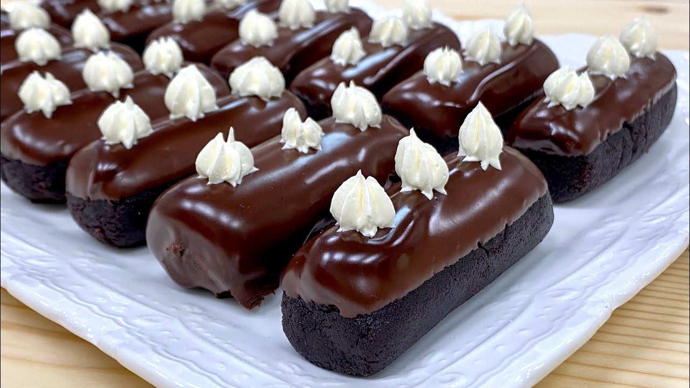

приготовление:
-
Сделать шоколадный бисквит по этому рецепту. Дать остыть.
-
Оставить 150 гр. сливочного масла при комнатной температуре.
-
Остывший бисквит разломать на кусочки, положить в комбайн-измельчитель, чтобы получить крошку в итоге. Сначало взбить миксером 150 гр. мягкого сливочного масла с 300 гр. сгущенки, потом туда же добавить 50 мл. рома/коньяка и 20 гр. какао. Получившийся крем смешать с крошкой бисквитной.Накрыть пленкой и отправить в холодильник на час минимум.
-
Сформировать пирожные (любую форму от кружочков до колбасок), можно на палочки насадить, поставить в морозилку, пока готовится ганаш.
-
Для шоколадного ганаша: растопить в микроволновке маленькими итерациями, помешивая между ними, 100 мл сливок 33% и 100 гр. темного шоколада (если нет микроволновки, то на водяной бане). Окунать до половины пирожные в ганаш.
-
Подавать можно со взбитыми сливками